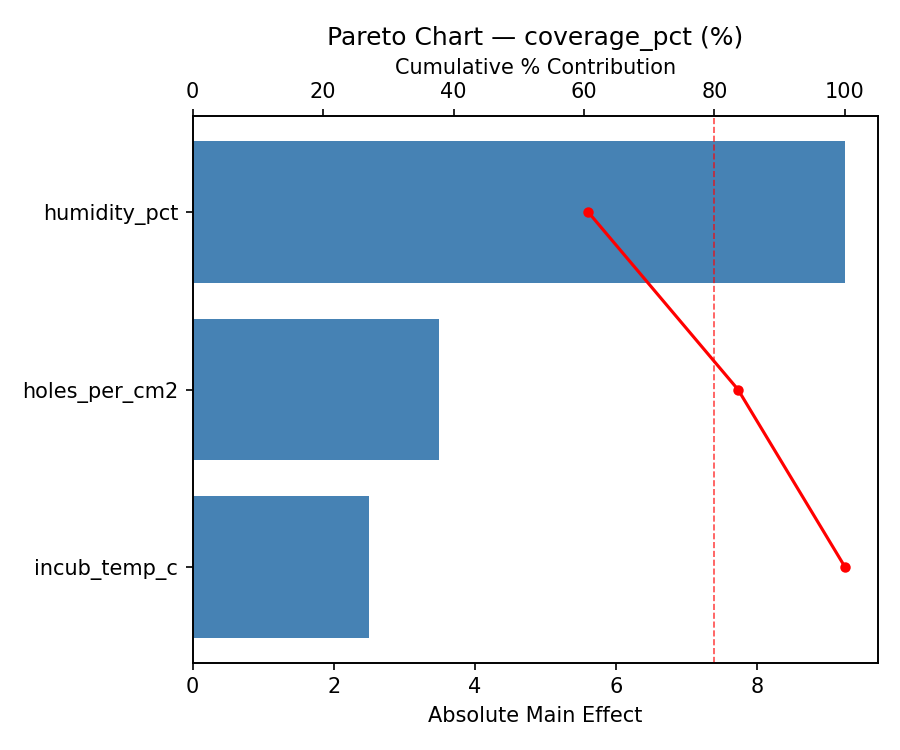
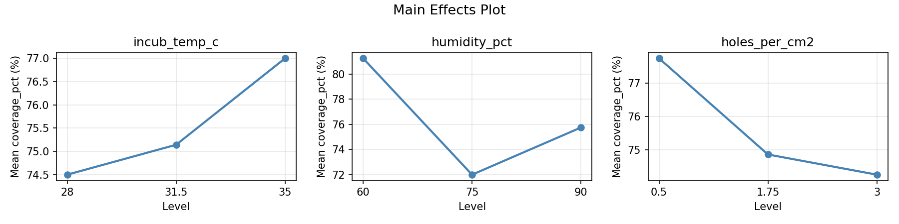
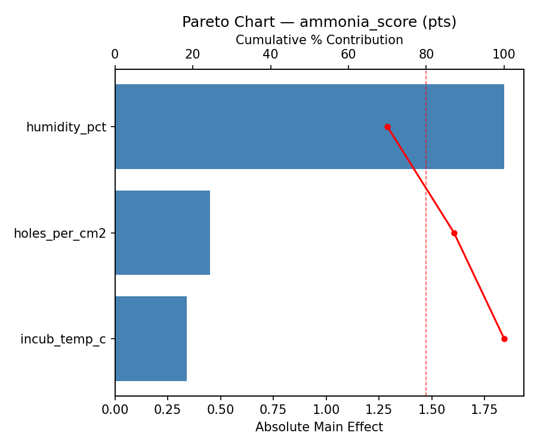
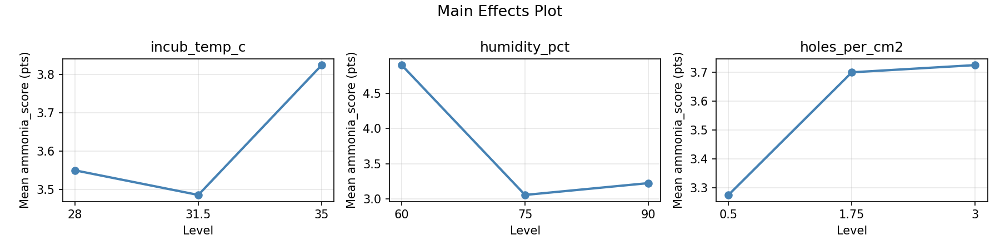
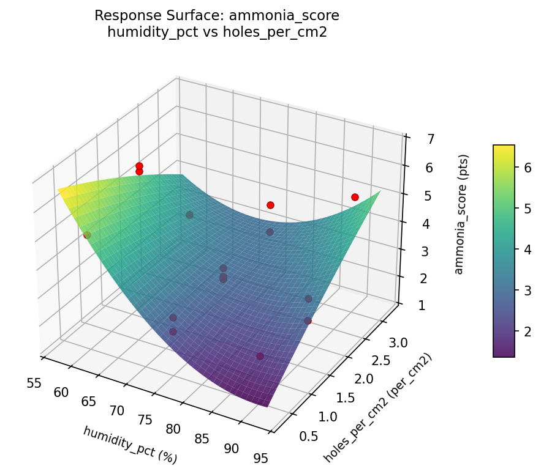
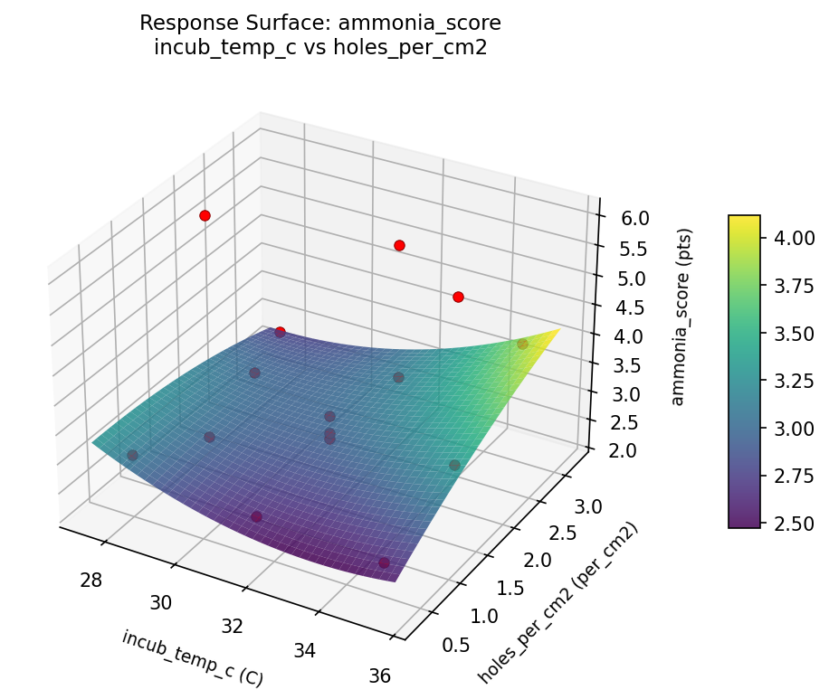
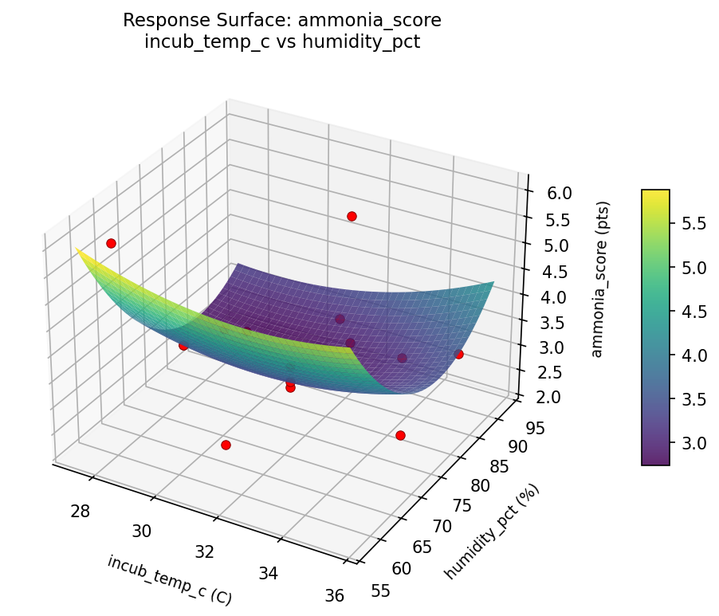
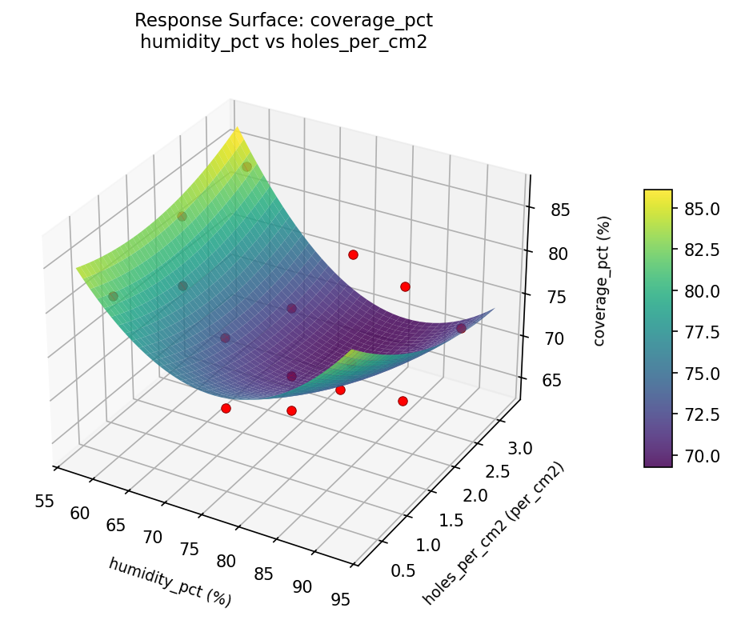
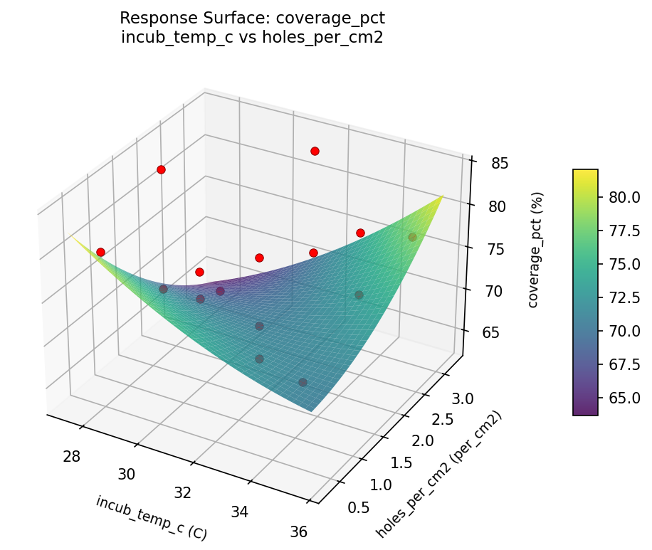
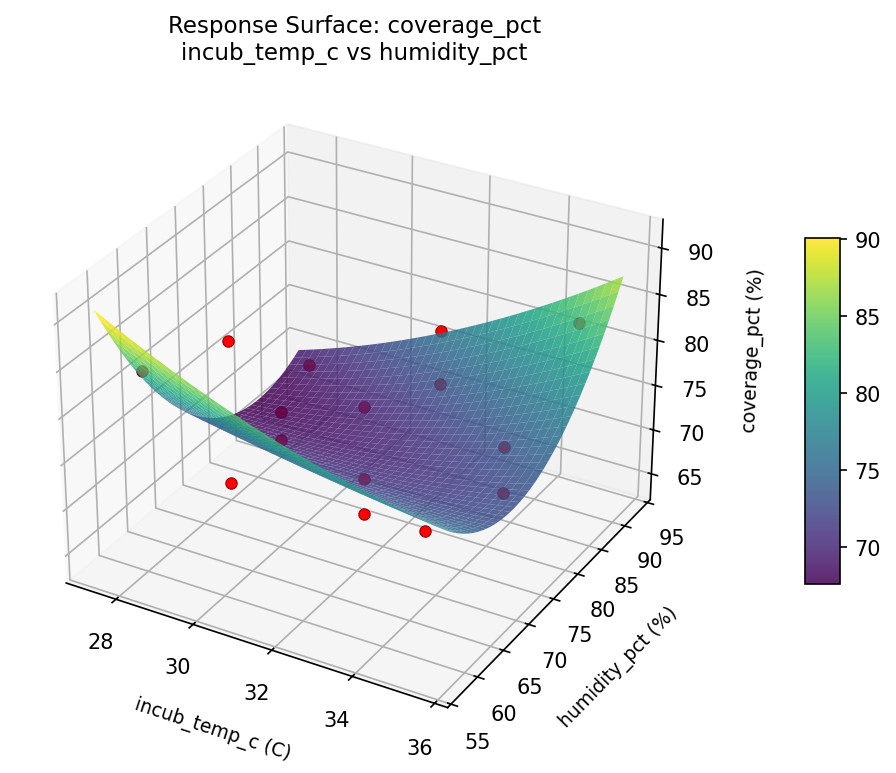

Summary
This experiment investigates tempeh incubation conditions. Box-Behnken design to maximize mycelium coverage and minimize ammonia by tuning incubation temperature, humidity, and perforation density.
The design varies 3 factors: incub temp c (C), ranging from 28 to 35, humidity pct (%), ranging from 60 to 90, and holes per cm2 (per_cm2), ranging from 0.5 to 3.0. The goal is to optimize 2 responses: coverage pct (%) (maximize) and ammonia score (pts) (minimize). Fixed conditions held constant across all runs include bean = soybean, starter = rhizopus_oligosporus.
A Box-Behnken design was chosen because it efficiently fits quadratic models with 3 continuous factors while avoiding extreme corner combinations — requiring only 15 runs instead of the 8 needed for a full factorial at two levels.
Quadratic response surface models were fitted to capture potential curvature and factor interactions. The RSM contour plots below visualize how pairs of factors jointly affect each response.
Key Findings
For coverage pct, the most influential factors were humidity pct (41.9%), holes per cm2 (38.7%), incub temp c (19.4%). The best observed value was 84.0 (at incub temp c = 31.5, humidity pct = 90, holes per cm2 = 0.5).
For ammonia score, the most influential factors were humidity pct (48.0%), incub temp c (26.8%), holes per cm2 (25.2%). The best observed value was 2.2 (at incub temp c = 35, humidity pct = 60, holes per cm2 = 1.75).
Recommended Next Steps
- Run confirmation experiments at the predicted optimal settings to validate the model.
- Consider whether any fixed factors should be varied in a future study.
Experimental Setup
Factors
| Factor | Low | High | Unit |
|---|
incub_temp_c | 28 | 35 | C |
humidity_pct | 60 | 90 | % |
holes_per_cm2 | 0.5 | 3.0 | per_cm2 |
Fixed: bean = soybean, starter = rhizopus_oligosporus
Responses
| Response | Direction | Unit |
|---|
coverage_pct | ↑ maximize | % |
ammonia_score | ↓ minimize | pts |
Configuration
{
"metadata": {
"name": "Tempeh Incubation Conditions",
"description": "Box-Behnken design to maximize mycelium coverage and minimize ammonia by tuning incubation temperature, humidity, and perforation density"
},
"factors": [
{
"name": "incub_temp_c",
"levels": [
"28",
"35"
],
"type": "continuous",
"unit": "C"
},
{
"name": "humidity_pct",
"levels": [
"60",
"90"
],
"type": "continuous",
"unit": "%"
},
{
"name": "holes_per_cm2",
"levels": [
"0.5",
"3.0"
],
"type": "continuous",
"unit": "per_cm2"
}
],
"fixed_factors": {
"bean": "soybean",
"starter": "rhizopus_oligosporus"
},
"responses": [
{
"name": "coverage_pct",
"optimize": "maximize",
"unit": "%"
},
{
"name": "ammonia_score",
"optimize": "minimize",
"unit": "pts"
}
],
"settings": {
"operation": "box_behnken",
"test_script": "use_cases/247_tempeh_incubation/sim.sh"
}
}
Experimental Matrix
The Box-Behnken Design produces 15 runs. Each row is one experiment with specific factor settings.
| Run | incub_temp_c | humidity_pct | holes_per_cm2 |
|---|
| 1 | 31.5 | 60 | 0.5 |
| 2 | 31.5 | 75 | 1.75 |
| 3 | 35 | 75 | 3 |
| 4 | 35 | 75 | 0.5 |
| 5 | 31.5 | 75 | 1.75 |
| 6 | 31.5 | 75 | 1.75 |
| 7 | 28 | 75 | 3 |
| 8 | 35 | 60 | 1.75 |
| 9 | 31.5 | 60 | 3 |
| 10 | 35 | 90 | 1.75 |
| 11 | 28 | 75 | 0.5 |
| 12 | 31.5 | 90 | 3 |
| 13 | 28 | 60 | 1.75 |
| 14 | 28 | 90 | 1.75 |
| 15 | 31.5 | 90 | 0.5 |
Step-by-Step Workflow
1
Preview the design
$ python doe.py info --config use_cases/247_tempeh_incubation/config.json
2
Generate the runner script
$ python doe.py generate --config use_cases/247_tempeh_incubation/config.json \
--output use_cases/247_tempeh_incubation/results/run.sh --seed 42
3
Execute the experiments
$ bash use_cases/247_tempeh_incubation/results/run.sh
4
Analyze results
$ python doe.py analyze --config use_cases/247_tempeh_incubation/config.json
5
Get optimization recommendations
$ python doe.py optimize --config use_cases/247_tempeh_incubation/config.json
6
Multi-objective optimization
With 2 competing responses, use --multi to find the best compromise via Derringer–Suich desirability.
$ python doe.py optimize --config use_cases/247_tempeh_incubation/config.json --multi
7
Generate the HTML report
$ python doe.py report --config use_cases/247_tempeh_incubation/config.json \
--output use_cases/247_tempeh_incubation/results/report.html
Features Exercised
| Feature | Value |
|---|
| Design type | box_behnken |
| Factor types | continuous (all 3) |
| Arg style | double-dash |
| Responses | 2 (coverage_pct ↑, ammonia_score ↓) |
| Total runs | 15 |
Analysis Results
Generated from actual experiment runs using the DOE Helper Tool.
Response: coverage_pct
Top factors: humidity_pct (41.9%), holes_per_cm2 (38.7%), incub_temp_c (19.4%).
Pareto Chart

Main Effects Plot

Response: ammonia_score
Top factors: humidity_pct (48.0%), incub_temp_c (26.8%), holes_per_cm2 (25.2%).
Pareto Chart

Main Effects Plot

Response Surface Plots
3D surfaces fitted with quadratic RSM. Red dots are observed data points.
ammonia score humidity pct vs holes per cm2

ammonia score incub temp c vs holes per cm2

ammonia score incub temp c vs humidity pct

coverage pct humidity pct vs holes per cm2

coverage pct incub temp c vs holes per cm2

coverage pct incub temp c vs humidity pct

Multi-Objective Optimization
When responses compete, Derringer–Suich desirability finds the best compromise.
Each response is scaled to a 0–1 desirability, then combined via a weighted geometric mean.
Overall Desirability
D = 0.8656
Per-Response Desirability
| Response | Weight | Desirability | Predicted | Dir |
|---|
coverage_pct |
1.0 |
|
84.00 0.9545 84.00 % |
↑ |
ammonia_score |
1.5 |
|
2.80 0.8110 2.80 pts |
↓ |
Recommended Settings
| Factor | Value |
|---|
incub_temp_c | 28 C |
humidity_pct | 60 % |
holes_per_cm2 | 1.75 per_cm2 |
Source: from observed run #12
Trade-off Summary
Sacrifice = how much worse than single-objective best.
| Response | Predicted | Best Observed | Sacrifice |
|---|
ammonia_score | 2.80 | 2.20 | +0.60 |
Top 3 Runs by Desirability
| Run | D | Factor Settings |
|---|
| #6 | 0.8185 | incub_temp_c=35, humidity_pct=60, holes_per_cm2=1.75 |
| #9 | 0.7831 | incub_temp_c=35, humidity_pct=90, holes_per_cm2=1.75 |
Model Quality
| Response | R² | Type |
|---|
ammonia_score | 0.0754 | linear |
Full Multi-Objective Output
============================================================
MULTI-OBJECTIVE OPTIMIZATION
Method: Derringer-Suich Desirability Function
============================================================
Overall desirability: D = 0.8656
Response Weight Desirability Predicted Direction
---------------------------------------------------------------------
coverage_pct 1.0 0.9545 84.00 % ↑
ammonia_score 1.5 0.8110 2.80 pts ↓
Recommended settings:
incub_temp_c = 28 C
humidity_pct = 60 %
holes_per_cm2 = 1.75 per_cm2
(from observed run #12)
Trade-off summary:
coverage_pct: 84.00 (best observed: 84.00, sacrifice: +0.00)
ammonia_score: 2.80 (best observed: 2.20, sacrifice: +0.60)
Model quality:
coverage_pct: R² = 0.0985 (linear)
ammonia_score: R² = 0.0754 (linear)
Top 3 observed runs by overall desirability:
1. Run #12 (D=0.8656): incub_temp_c=28, humidity_pct=60, holes_per_cm2=1.75
2. Run #6 (D=0.8185): incub_temp_c=35, humidity_pct=60, holes_per_cm2=1.75
3. Run #9 (D=0.7831): incub_temp_c=35, humidity_pct=90, holes_per_cm2=1.75
Full Analysis Output
=== Main Effects: coverage_pct ===
Factor Effect Std Error % Contribution
--------------------------------------------------------------
humidity_pct 7.0357 1.6927 41.9%
holes_per_cm2 6.5000 1.6927 38.7%
incub_temp_c 3.2500 1.6927 19.4%
=== ANOVA Table: coverage_pct ===
Source DF SS MS F p-value
-----------------------------------------------------------------------------
incub_temp_c 2 21.2690 10.6345 0.293 0.7539
humidity_pct 2 127.5548 63.7774 1.755 0.2333
holes_per_cm2 2 112.7333 56.3667 1.551 0.2695
Lack of Fit 6 267.5095 44.5849 1.227 0.5137
Pure Error 2 72.6667 36.3333
Error 8 340.1762 36.3333
Total 14 601.7333 42.9810
=== Summary Statistics: coverage_pct ===
incub_temp_c:
Level N Mean Std Min Max
------------------------------------------------------------
28 4 73.7500 7.9320 64.0000 83.0000
31.5 7 75.5714 6.8034 65.0000 84.0000
35 4 77.0000 6.1644 69.0000 84.0000
humidity_pct:
Level N Mean Std Min Max
------------------------------------------------------------
60 4 76.0000 6.5828 69.0000 83.0000
75 7 72.7143 7.1581 64.0000 84.0000
90 4 79.7500 3.5000 76.0000 84.0000
holes_per_cm2:
Level N Mean Std Min Max
------------------------------------------------------------
0.5 4 73.5000 7.3258 64.0000 81.0000
1.75 7 74.0000 6.2183 65.0000 83.0000
3 4 80.0000 5.6569 72.0000 84.0000
=== Main Effects: ammonia_score ===
Factor Effect Std Error % Contribution
--------------------------------------------------------------
humidity_pct 1.9250 0.3248 48.0%
incub_temp_c 1.0750 0.3248 26.8%
holes_per_cm2 1.0107 0.3248 25.2%
=== ANOVA Table: ammonia_score ===
Source DF SS MS F p-value
-----------------------------------------------------------------------------
incub_temp_c 2 2.4633 1.2316 8.593 0.0102
humidity_pct 2 8.8947 4.4473 31.028 0.0002
holes_per_cm2 2 2.6058 1.3029 9.090 0.0087
Lack of Fit 6 7.8990 1.3165 9.185 0.1014
Pure Error 2 0.2867 0.1433
Error 8 8.1856 0.1433
Total 14 22.1493 1.5821
=== Summary Statistics: ammonia_score ===
incub_temp_c:
Level N Mean Std Min Max
------------------------------------------------------------
28 4 4.2250 1.4431 3.0000 5.8000
31.5 7 3.4857 1.4311 2.2000 6.0000
35 4 3.1500 0.6191 2.6000 4.0000
humidity_pct:
Level N Mean Std Min Max
------------------------------------------------------------
60 4 2.9250 0.2986 2.5000 3.2000
75 7 3.2571 0.9727 2.2000 5.1000
90 4 4.8500 1.5610 2.6000 6.0000
holes_per_cm2:
Level N Mean Std Min Max
------------------------------------------------------------
0.5 4 3.6250 1.1087 2.5000 5.0000
1.75 7 3.2143 1.1838 2.2000 5.8000
3 4 4.2250 1.5756 2.8000 6.0000
Optimization Recommendations
=== Optimization: coverage_pct ===
Direction: maximize
Best observed run: #10
incub_temp_c = 31.5
humidity_pct = 90
holes_per_cm2 = 0.5
Value: 84.0
RSM Model (linear, R² = 0.1313, Adj R² = -0.1056):
Coefficients:
intercept +75.4667
incub_temp_c +2.5000
humidity_pct +1.7500
holes_per_cm2 +0.7500
RSM Model (quadratic, R² = 0.4965, Adj R² = -0.4099):
Coefficients:
intercept +74.0000
incub_temp_c +2.5000
humidity_pct +1.7500
holes_per_cm2 +0.7500
incub_temp_c*humidity_pct +0.5000
incub_temp_c*holes_per_cm2 +1.5000
humidity_pct*holes_per_cm2 +0.5000
incub_temp_c^2 -4.7500
humidity_pct^2 +4.7500
holes_per_cm2^2 +2.7500
Curvature analysis:
incub_temp_c coef=-4.7500 concave (has a maximum)
humidity_pct coef=+4.7500 convex (has a minimum)
holes_per_cm2 coef=+2.7500 convex (has a minimum)
Notable interactions:
incub_temp_c*holes_per_cm2 coef=+1.5000 (synergistic)
humidity_pct*holes_per_cm2 coef=+0.5000 (synergistic)
incub_temp_c*humidity_pct coef=+0.5000 (synergistic)
Predicted optimum (from linear model, at observed points):
incub_temp_c = 35
humidity_pct = 90
holes_per_cm2 = 1.75
Predicted value: 79.7167
Surface optimum (via L-BFGS-B, linear model):
incub_temp_c = 35
humidity_pct = 90
holes_per_cm2 = 3
Predicted value: 80.4667
Model quality: Weak fit — consider adding center points or using a different design.
Factor importance:
1. incub_temp_c (effect: 7.8, contribution: 43.4%)
2. humidity_pct (effect: 6.6, contribution: 37.1%)
3. holes_per_cm2 (effect: 3.5, contribution: 19.5%)
=== Optimization: ammonia_score ===
Direction: minimize
Best observed run: #7
incub_temp_c = 35
humidity_pct = 60
holes_per_cm2 = 1.75
Value: 2.2
RSM Model (linear, R² = 0.3310, Adj R² = 0.1486):
Coefficients:
intercept +3.5933
incub_temp_c +0.0500
humidity_pct +0.7125
holes_per_cm2 -0.6375
RSM Model (quadratic, R² = 0.7100, Adj R² = 0.1879):
Coefficients:
intercept +4.5667
incub_temp_c +0.0500
humidity_pct +0.7125
holes_per_cm2 -0.6375
incub_temp_c*humidity_pct -0.2250
incub_temp_c*holes_per_cm2 -0.5750
humidity_pct*holes_per_cm2 -0.7000
incub_temp_c^2 -0.8583
humidity_pct^2 -0.8333
holes_per_cm2^2 -0.1333
Curvature analysis:
incub_temp_c coef=-0.8583 concave (has a maximum)
humidity_pct coef=-0.8333 concave (has a maximum)
holes_per_cm2 coef=-0.1333 concave (has a maximum)
Notable interactions:
humidity_pct*holes_per_cm2 coef=-0.7000 (antagonistic)
incub_temp_c*holes_per_cm2 coef=-0.5750 (antagonistic)
Predicted optimum (from quadratic model, at observed points):
incub_temp_c = 31.5
humidity_pct = 90
holes_per_cm2 = 0.5
Predicted value: 5.6500
Surface optimum (via L-BFGS-B, quadratic model):
incub_temp_c = 28
humidity_pct = 60
holes_per_cm2 = 0.5
Predicted value: 1.1167
Model quality: Good fit — general trends are captured, some noise remains.
Factor importance:
1. humidity_pct (effect: 1.5, contribution: 41.1%)
2. holes_per_cm2 (effect: 1.3, contribution: 35.5%)
3. incub_temp_c (effect: 0.8, contribution: 23.4%)